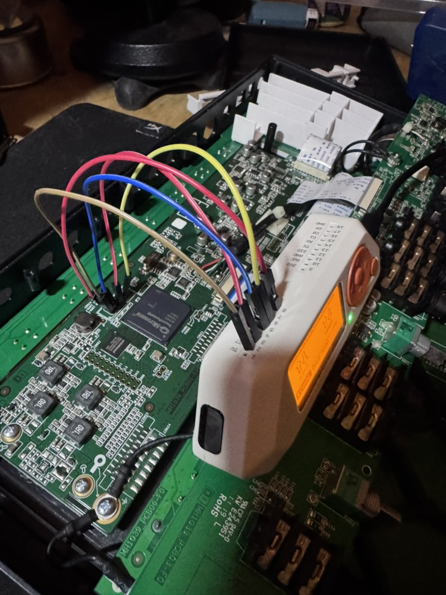

Reverse engineering my Maschine MK3
Recently, I wanted to test my hardware reverse engineering skills. I had a Maschine MK3 lying around, so I decided to see how far I could get with dumping its firmware and exploring what I could access on the device.
I used Codex throughout the investigation. Part of the motivation was to test Daybreak Blue’s capabilities on a real hardware reverse engineering project and see how it could help me work through the device’s debug interfaces and firmware.
The following prompt gave me the best results:
/goal let it rip :)
That became re-maschine: an investigation that took me from the USB update interface to an exposed debug connection and, eventually, readable processor firmware.
I’m not an expert, nor do I claim to understand everything below as fact. I’m simply a man with some ammunition and some tokens to burn—roughly 2.65 billion, by my estimate.
Giving Codex an arm
What worked well for me was giving Codex CLI access to a Flipper Zero and letting it act as an arm into the hardware. In my setup, the Flipper connected the computer to the MK3’s signals and debug interface, so Codex could help run measurements, inspect the results, and work through the next step. I handled the physical wiring and board connections.

Finding a way in
I started by looking at how the MK3 talked to the computer and how its update process worked. That gave me a copy of what appeared to be the encrypted firmware update data, but I couldn’t do much with it yet.
From there, I opened the device and started looking at the connections on the board. Some of the labels and chip documentation pointed toward a debug interface worth exploring. There was a fair amount of checking assumptions before I got a useful response.
I didn’t have a multimeter handy, so part of the discovery involved some fun, janky resistor harnessing with the Flipper to help figure out what was going on with the board’s signals.
Modifying a Flipper app for the job
One of my first attempts was to listen for messages from the board as it started up. I didn’t get anything useful, so I wanted a better way to see whether there was activity on the connection.
I adapted an existing Flipper logic-analyzer app into MK3 Edge Timer, building on g3gg0’s work. The changes helped it communicate with my computer and record the timing of signal changes. I also added a small companion tool to make those recordings easier to inspect.
As the investigation moved toward JTAG, I added a few checks to help understand the board’s electrical behavior and why the connection wasn’t responding. The custom app became a useful troubleshooting tool, even though the original attempt to find readable startup messages didn’t pan out.
Getting the debug connection working
For the actual debug connection, I used DAP Link on the Flipper and OpenOCD on the computer. JTAG is an interface that can be used to inspect and debug hardware. In this case, it looked like a possible way to reach the processor inside the MK3.
I worked through the wiring, checked the signals, and investigated how the board selected between its debug paths. The early attempts didn’t return much. After sorting out the connections and changing that selection, I started getting responses that lined up with the processor I was trying to reach.
That was enough to try a small memory read before moving on to a larger dump.
Getting a firmware dump
With the connection working, I was able to read the processor’s stored firmware. I repeated the read and compared the files to see whether the result was consistent. One attempt ran into a timeout, but after adjusting that, I ended up with two complete copies that matched.
Unlike the earlier update data, this contained recognizable names and what looked like executable code. That gave me much more to investigate. The reads were done without writing new firmware, and the device continued operating during the process.
What I took away
My understanding from the dump and the follow-up analysis is that I had reached the processor firmware and could start piecing together parts of the startup and update process. There are still gaps in that picture, and I’d treat the notes as a record of the investigation rather than a complete explanation of how the MK3 works.
I didn’t get access to every part of the device or break all of its protections. Some of its contents remained encrypted, and getting a readable dump was only the beginning of understanding what the code does.
Along the way, I also got a custom image onto the left display. I’d like to build toward a fuller Ableton integration, but for now, this was a chance to learn, adapt a few tools, and see how far I could get with Codex and hardware I already owned.
The research notes and tools are in the repository if you want to follow the details. The firmware files themselves remain private.
Project notes
More detail on the experiments is in the display bring-up notebook, firmware acquisition notebook, and plaintext eNVM notebook.